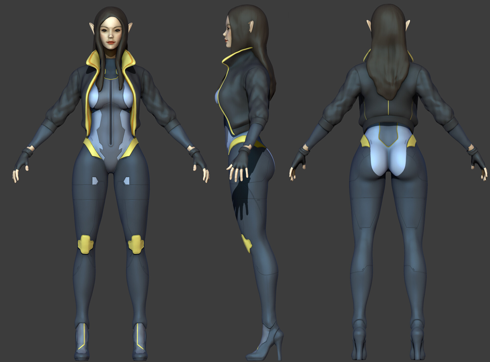
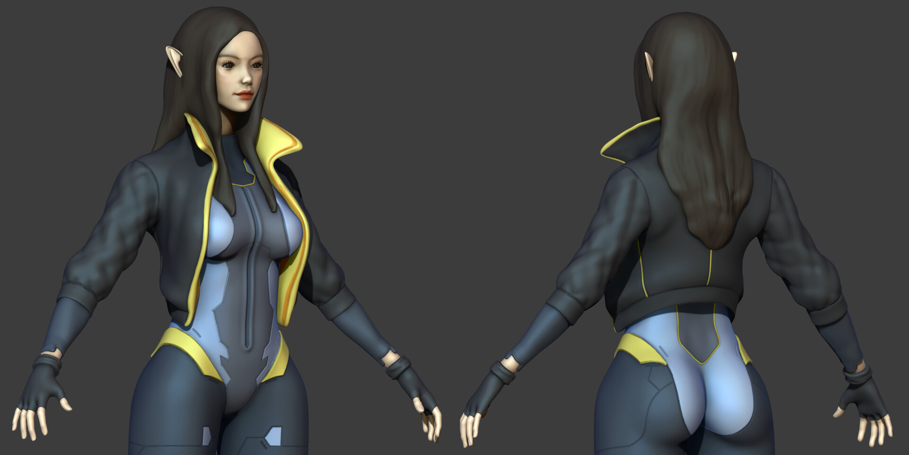
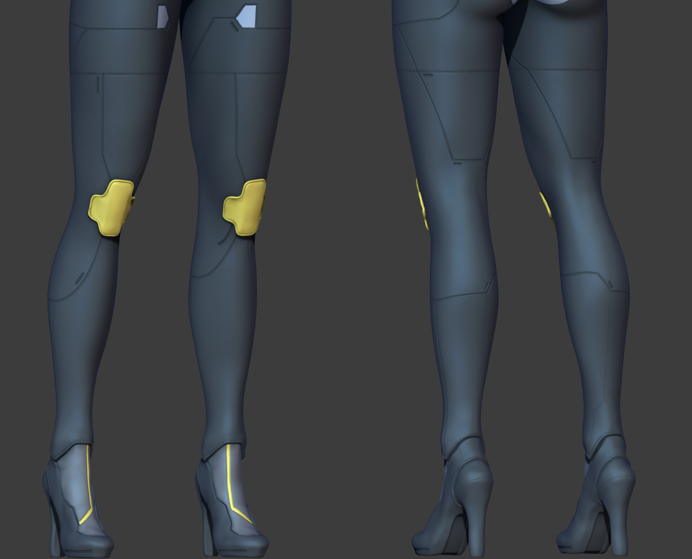
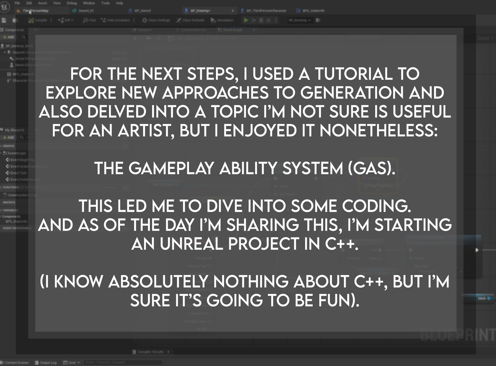

CharacterPersonnage
Rosalee · Sculpt WIPRosalee · Sculpture en cours
A character sculpt in progress in ZBrush. Click any view to inspect it. Une sculpture de personnage en cours dans ZBrush. Cliquez sur une vue pour l'examiner.



ProceduralProcédural
Dungeon GenerationGénération de donjons
Procedural dungeon generation in Unreal Engine: rooms, corridors and connections assembled at runtime. Génération procédurale de donjons dans Unreal Engine : salles, couloirs et connexions assemblés à l'exécution.
Gameplay
Gameplay Ability System
Experiments with Unreal's Gameplay Ability System, including a procedural gas effect wired into abilities. Expériences avec le Gameplay Ability System d'Unreal, dont un effet de gaz procédural branché sur les capacités.
Second experiment + gas renderDeuxième expérience + rendu du gaz
